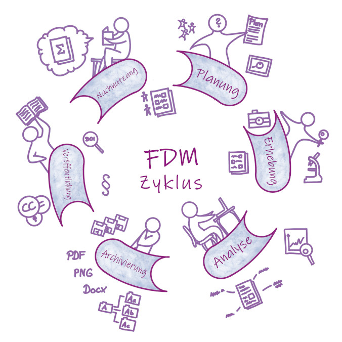
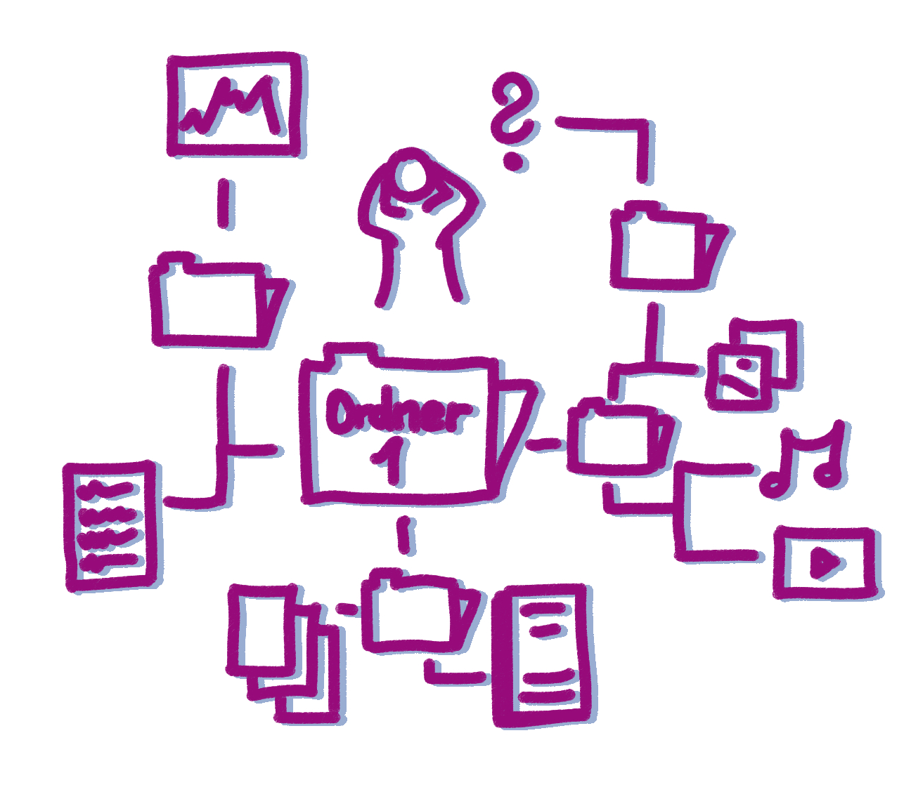
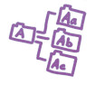
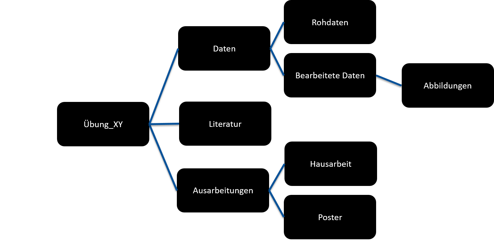

Digitale Forschungsdaten ordnen und strukturieren
Herzlich Willkommen im Lernbaustein “Digitale Forschungsdaten ordnen und strukturieren”!

Dieser Lernbaustein ist Teil einer Lernbaustein-Reihe zum Themenbereich Forschungsdatenmanagement, welche im Rahmen des durch das CAU Programm für die Digitale Lehre 2021-2023 geförderten Projektes E-Learning Building Blocks for RDM (eLBB4RDM) entstand.
An der Erstellung dieses Lernbausteins beteiligt war ein interdisiplinär zusammengesetzes Team aus Lehrenden, Infrastrukturmitarbeitenden und Studierenden der Christian-Albrechts-Universität zu Kiel. Die verwendeten Illustrationen wurden, wo nicht anders angegeben, von Cleo Michelsen erstellt.
Der Lernbaustein wurde für den Einsatz in der Lehre entwickelt. Er eignet sich jedoch ebenfalls für das reine Selbststudium.
Zielgruppe dieses Lernmoduls
Zielgruppe dieses Lernbausteins sind alle, die sich einen Überblick über die Ordnung und Strukturierung von digitalen Forschungsdaten verschaffen möchten. Das Modul ist für Studierende aller Fachbereiche geeignet.
Ziele dieses Lernmoduls
- Mit den Inhalten dieses Lernbausteins möchten wir Sie für die Bedeutung eines strukturieren Vorgehens bei der Benennung und Ablage von (Forschungsdaten-)Dateien sensibilisieren.
- Das Lernmodul soll Ihnen wichtige Aspekte näher bringen, die beim Anlegen von Ordnern und bei der Benennung von Dateien für einen strukturierten und nachvollziehbaren Umgang mit Ihren Daten zu beachten sind.
- Nach Bearbeitung dieses Lernmoduls, sind Sie in der Lage, Merkmale guter Verzeichnisstrukturen zu benennen.
- Nach Bearbeitung dieses Lernbausteins, sind Sie in der Lage zu beschreiben, was eine Dateibenennungskonvention ist und können Kriterien für gute Dateienbenennungen wiedergeben.
- Nach Bearbeitung dieses Lernbausteins sind Sie in der Lage Benennungskonventionen zu entwickeln und auf eigene sowie kollaborativ genutzte (Forschungsdaten-)Dateien anzuwenden.
Digitale (Forschungs-)Daten ordnen und strukturieren
 Wenn Sie Daten generieren und in Form von Dateien abspeichern und bearbeiten, können diese sehr schnell unübersichtlich werden. Dieser Lernbaustein soll Grundlagen der Dateiorganisation vermitteln und Sie dabei unterstützen, ein strukturiertes Vorgehen beim Anlegen von Verzeichnis- oder Ordnerstrukturen und Dateibenennungen umzusetzen.
Auf den nächsten Seiten werden uns folgenden Inhalten widmen:
- Warum ein strukturierter Umgang mit Forschungsdaten wichtig ist
- Ordnerstrukturen: Ordner so anlegen, dass man sie wiederfindet und weiß, was drin ist.
- Dateinamen: Dateien so benennen, dass man versteht was sie enthalten
- Dokumentieren: Dateiablage und Benennungskonventionen so beschreiben, dass man sich (auch in Zukunft noch) zurechtfindet
Warum ein strukturierter Umgang mit Forschungsdaten wichtig ist
Eine der größten Herausforderungen im Umgang mit Forschungsdaten ist die schiere Menge der digital vorhandenen Daten. Mit einer zunehmender Datenmenge wird ein organisierter und strukturierter Umgang mit Ihren Daten immer wichtiger.
Vielleicht haben Sie selbst schon mal die Erfahrung gemacht, dass Sie für das Finden einer bestimmten Datei viel Zeit aufwenden mussten? Oder schlimmer noch, dass Sie eine aktuelle Arbeit versehendlich überschrieben oder gelöscht haben?
Unübersichtliche Odnerstrukturen und Dateibenennungen können Zeit und Nerven kosten. Dies gilt ganz besonders, wenn es durch die Unübersichtlichkeit zu Datenverlusten kommt!
 Sobald Sie beginnen, Ihre Daten beispielsweise durch eine
statistische Analyse zu bearbeiten und damit Ihren Rohdatensatz zu
verändern, sollten Sie zusätzlich zu Speicherorten, Ordnerstrukturen und
Dateinamen auch die Kenntlichmachung des Bearbeitungsstands
(Versionierung -> Verweis zu Modul Versionierung) Ihrer Dateien im
Blick haben.
Sobald Sie beginnen, Ihre Daten beispielsweise durch eine
statistische Analyse zu bearbeiten und damit Ihren Rohdatensatz zu
verändern, sollten Sie zusätzlich zu Speicherorten, Ordnerstrukturen und
Dateinamen auch die Kenntlichmachung des Bearbeitungsstands
(Versionierung -> Verweis zu Modul Versionierung) Ihrer Dateien im
Blick haben.
Denken Sie auch über eine begleitende Dokumentation nach, in der Sie Ihre eigenen Regeln und Ihr Vorgehen festhalten.
Behalten Sie den Überblick und nehmen Sie sich etwas Zeit, um ein strukturiertes Vorgehen beim Anlegen von Ordnerstrukturen und der Vergabe von Dateinamen zu verfolgen!
Ziele einer strukturierten Datei- und Ordnerorganisation
- Einfacheres und schnelleres Suchen und Finden von Dateien
- Vermeidung doppeltet Arbeit
- Vorbeugung von Datenverlusten durch Überschreibung oder versehentliches Löschen
- Einfache und schnelle Identifizierung des aktuellen Stands einer Datei
- Kurz-, mittel- und langfristige Nachvollziehbarkeit der Daten (damit auch nach Jahren nachvollziehbar bleibt, was, wie und weshalb getan wurde)
- Die Zusammenarbeit mit anderen vereinfachen
- Maschinenlesbarkeit gewährleisten

Insgesamt führt der strukturierte Umgang mit Ihren Dateien zu einem effizienteren Arbeiten. Auch für die Datenqualität ist ein strukturiertes Vorgehen beim Anlegen von Ordnerstrukturen und Dateibenennungen ein wichtiges Puzzelteil.
Selbsttest
Was sollte man neben einer logischen Ordnerstruktur und strukturierten Dateibenennungen im Hinblick auf eine gute Dateiorganisation noch im Blick haben? (Mehrfachauswahl möglich)
[[ ]] Analysemethoden [[ ]] Auswahl des richtigen Programms [[X]] Datei-Versionierungen [[X]] Dokumentation des eigenen Vorgehens
Welche der folgenden Ziele werden u. a. mit einem strukturierten Anlegen von Ordnern sowie der strukturierten Vergabe von Dateinamen verfolgt? (Mehrfachauswahl möglich)
[[X]] Datenverlust vermeiden [[X]] Doppelte Bearbeitung vermeiden [[ ]] Einhaltung von Richtlinien der Universität [[ ]] Vorgaben der Deutschen Forschungsgemeinschaft (DFG) erfüllen [[X]] Zusammenarbeit vereinfachen
Ordner benennen und strukturieren
Unabhängig davon, an welchem Speicherort oder -medium Sie Ihre Dateien ablegen: Sie sollten sich ein System für Ihre Daten einrichten, welches Ihnen einen möglichst einfachen und schnellen Zugriff auf Ihre Dateien ermöglicht, Doppelarbeit vermeidet und sicherstellt, dass Ihre Daten adäquat gesichert werden.
Die Entwicklung einer logischen Ordnerstruktur ist hierfür ein sehr guter Startpunkt!
Kein Patentrezept!
 Für die Erstellung einer Ordnerstruktur gibt es kein “Patentrezept”, welches gleichermaßen für jeden Menschen und jedes Projekt funktionieren würde. Es gibt viele Möglichkeiten, Dateien zu organisieren und Ordnerstrukturen anzulegen.
Nehmen Sie sich daher etwas Zeit und überlegen Sie, welche Vorgehensweise für Sie und für Ihre Studienprojekte sinnvoll und passend ist.
Richtlinien für die Entwicklung einer Ordnerstruktur
Ein Patentrezept für eine passende Ordnerstruktur gibt es nicht. Folgende Hinweise können Ihnen aber bei der Entwicklung einer logisch aufgebauten Ordnerstruktur helfen:
Ordner fassen Dateien mit gemeinsamen Eigenschaften zusammen!
Legen Sie Ordner an, die Dateien mit gemeinsamen Eigenschaften gruppieren, so dass sich Informationen zu einem bestimmten Thema an einem Ort befinden. Denken Sie darüber nach, wie Sie Ihre Dateien in Zukunft durchsuchen möchten! Mögliche Kategorien für Ihre Ordner wären beispielsweise Ihre Studienfächer, die zugehörigen Veranstaltungsformen (Vorlesungen, Seminare, Übungen, Praktika)und/oder die Semester, in denen Sie an den Veranstaltungen teilgenommen haben.
Wenn Sie digitale Forschungsdaten, die Sie etwa im Rahmen eines Praktikums oder einer Übung erheben und bearbeiten speichern, dann können Sie diese beispielsweise nach Thema, Teilnehmergruppe, Datenerhebungsmethode, Datum bzw. Zeitraum oder auch nach Art der Dateien (Formate) ordnen.
Verwenden Sie aussagekräftige Ordnernamen!
- Stellen Sie sicher, dass Sie klare und angemessene Ordnernamen verwenden, die den Inhalt des Ordners prägnant wiedergeben. Sie haben sich eben überlegt, nach welchen Merkmalen Sie Ihre Dateien gruppieren möchten. Formulieren Sie hierzu passende Ordnernamen.
Ordner hierarchisch strukturieren!
- Entwerfen Sie eine Ordnerstruktur. Beginnen Sie mit einer begrenzten Anzahl von Ordnern für die übergeordneten Themen und legen Sie dann innerhalb dieser Ordner weitere spezifischere Ordner an.
Nicht zu viele Unterordner anlegen!
- Ihr Ablagekonzept sollte besser einfach als komplex sein. Halten Sie daher die Anzahl der Unterordner überschaubar - wenn Sie zu viele Unterordner haben, kann das dies die Navigation erschweren. Andererseits wollen auch nicht zahlreiche Dateien innerhalb eines Ordners durchsuchen müssen, um die gewünschte Datei zu finden. Finden Sie die für Sie stimmige Balance!
Laufende und abgeschlossene Arbeiten trennen!
- Es kann sehr hilfreich sein, Entwürfe und abgeschlossene Arbeiten in getrennten Ordnern abzulegen. Verschieben Sie die Dateien, an denen Sie nicht mehr arbeiten regelmäßig in einen anderen Ordner oder an einen anderen Ort, z. B. in einen speziellen Archivordner oder auf ein anderes Speichermedium, beispielsweise eine externe Festplatte. So können Sie auch leichter überprüfen und im Auge behalten, was Sie behalten müssen, während Sie weiterarbeiten.
Rohdaten immer gesondert ablegen!
- Bewahren Sie Ihre Rohdaten getrennt von den Daten auf, an denen Sie arbeiten: Speichern Sie immer eine “Rohdaten”-Datei, die unverändert bleibt, so dass Sie stets eine Kopie der unveränderten Originaldaten haben! Es ist möglich, dass Sie darauf zurückgreifen müssen.
Backup nicht vergessen!
- Stellen Sie sicher, dass Ihre Dateien, egal ob sie sich auf Ihrem lokalen Laufwerk oder auf einem Netzlaufwerk befinden, regemäßig gesichert werden. (Verweis Lernmodul Backup)
Nicht mehr benötigte Dateien löschen!
- Überprüfung Sie regelmäßig oder am Ende einer abgeschlossenen Arbeit Ihre Dateien und löschen Sie die nicht mehr benötigten Dateien. Tragen Sie sich eine Erinnerung in Ihren Kalender ein, damit Sie es nicht vergessen!
Gegebenenfalls eine Zwischenablage anlegen!
- Für Dokumente, die Sie (noch) nicht klar einem Ihrer Verzeichnisse zuordnen können, kann ein Ordner „Temp“ oder „Noch einzuordnen“ angelegt werden. Eine solche Zwischenablage sollte aber unbedingt regelmäßig aufgeräumt werden.
Ausprobieren und anpassen!
- Versuchen Sie unter Berücksichtigung der oben genannten Hinweise eine Ordnerstruktur zu entwickeln, deren Ordnung Ihren persönlichen Bedürfnissen entspricht. Es ist ggf. sinnvoll, das Konzept anhand einiger Beispielfälle auszuprobieren. Erst dann – ggf. nach entsprechenden Änderungen – sollten Sie mit einer Umsetzung in größerem Stil beginnen. So vermeiden Sie, zu einem späteren Zeitpunkt Ihre Ordnerstruktur eventuell komplett umbauen zu müssen. Überprüfen Sie auch im weiteren Verlauf, ob Ihre Ablagestruktur noch passt. Ein Hinweis auf Überarbeitungsbedarf könnte die Zahl der Dateien sein, die nicht eindeutig zugeordnet werden können (und daher ggf. in der Zwischenablage landen). Halten Sie in Ihrer Dokumentation auch eventuelle Anpassungen fest.
Konsequent bleiben!
- Seien Sie konsequent - wenn Sie ein Ordnungs- und Benennungsschema für Ihre Dateiablage entwickeln, ist es wichtig, dass Sie sich an eine einmal festgelegte Methode halten. Versuchen Sie nach Möglichkeit, sich möglichst früh ein Ordnungsschema zu überlegen. Dokumentieren Sie Ihr Ordnungs- und Bennungsschema! Halten Sie in Ihrer Dokumentation auch eventuelle Anpassungen fest.
Für gemeinsam genutzte Dateien Regeln festlegen!
- Wenn Sie Ihre Daten und Dateien gemeinsam mit Kommiliton*innen nutzen sollten Sie gemeinsam Regeln zum Umgang mit den Daten festlegen. Entwickeln Sie eine gemeinsame Ordnerstruktur, eine gemeinsame Dateinbenennungskonvention und legen Sie Zugriffsrechte fest. Dokumentieren Sie Ihre gemeinsamen Regeln!
Beispiel Ordnnerstruktur
Folgende Beispiele sollen Ihnen als Orientierunghilfe für die Erstellung eigener Ordnerstrukturen dienen:

Selbsttest
Ordner sollten hirarchisch strukuriert werden. Warum sollten jedoch nicht übermäßig viele Unterordner angelegt werden?
[[ ]] Viele Unterordner erhöhen den Verbrauch an Speicherplatz [[X]] Viele Unterordner erschweren die Navigation zu den Dateien
Was sollten Sie grundsätzlich immer mit Ihren Rohdaten machen?
[[ ]] Nichts, Rohdaten müssen nicht gespeichert werden. [[X]] Rohdaten sollten stets in einer unveränderten Version gespeichert sein. [[ ]] Rohdaten sollten vor der Bearbeitung in unterschiedliche Formate umgewandelt werden.
Dateien strukturiert benennen
Platzhalter für Comic_final.doc
Jede Datei, an der Sie arbeiten und die Sie speichern muss in dem Ordner, in dem sie gespeichert wird, einen eindeutigen Namen besitzen. Auf diese Weise wird sichergestellt, dass die Datei einen eindeutigen und individuellen Pfadnamen innerhalb des Dateisystems hat.
Pfad-Beispiel?
Wild vergebene Dateinamen können uns um den Verstand bringen! Beispielsweise, wenn wir verzweifelt nach der wirklich aktuellen Version der Hausarbeit suchen, die wir spätestens morgen früh abgeben müssen! Schlimmer noch, wenn erst beim Ausdrucken im Copy-Shop auffällt, dass Sie gerade eine alte Version drucken, in der diese eine wichtige Änderung noch nicht eingearbeitet ist.
Es empfiehlt sich daher, klare Regeln aufzustellen, nach denen Sie Ihre Dateien benennen.
Es ist nicht möglich zwei Dateien mit exakt dem selben Namen in ein und demselben Ordner zu speichern, da die Pfadnamen beider Dateien in einem solchen Fall identisch wären. Zwei Datei mit einer exakt identischen Benennung in zwei unterschiedlichen Ordnern zu speichern ist dagegen theoretisch möglich, da in dem Fall die Pfadnamen beider Dateien weiterhin und individuell sind. Empfehenswert ist eine identische Dateibenennung in unterschiedlichen Ordnern jedoch nicht, da sonst viel zu sehr darauf geachtet werden muss, an welcher Datei genau gerade gearbeitet wird.
Richtlinien für die Entwicklung einer Dateibenennungskonvention
Ein Regelwerk für die Benennung von Dateien wird als Dateibenennungskonvention bezeichnet und genau wie Ihr Regelwerk zum Anlegen und Benennen von Ordnern sollte auch Ihr Regelwerk für die Benennung von Dateien dokumentiert und möglichst konsequent angewendet werden.
Dateien mit einer Namenskonvention bieten eine Vorschau auf den Inhalt, sind logisch geordnet (z.B. nach Datum jjjj-mm-tt), geben Hinweise auf die verantwortlichen Erstellerinnen und Bearbeiterinnen sowie über den Verlauf der Änderungen an der Datei. Dateinamen sollten stets so kurz wie möglich aber so lang wie nötig sein!
Beachten Sie die folgenden Richtlinien beim Benennen Ihrer Dateien:
Legen Sie frühzeitig eine Konvention fest!
- Es ist wichtig, frühzeitig eine Dateibenennungskonvention zu erstellen. Machen Sie sich Gedanken bevor Sie mit dem Sammeln von Dateien oder Daten beginnen, um einen Rückstau von unorganisierten Inhalten zu vermeiden, der zu verlegten oder verlorenen Daten führen kann! Dies gilt insbesondere für kollaborativ genutzte Dateien.
Unterschiedliche Konventionen für verschiedene Dateitypen sind erlaubt!
- Bestimmen Sie, für welche Dateigruppe Ihre Namenskonvention gelten soll. Sie können unterschiedliche Konventionen für verschiedene Dateigruppen verwenden.
- Dokumentieren Sie Ihre Konventionen entsprechend - beispielsweise: Diese Konvention wird für alle meine Mikroskopiedateien gelten, vom Rohbild bis zum bearbeiteten Bild.)
Prüfen Sie, ob bereits etablierte Konventionen existieren!
- Prüfen Sie, ob es in Ihrem Fachgebiet oder Ihrer Gruppe bereits etablierte Konventionen für die Benennung von Dateien gibt. Falls ja, orientieren Sie sich an den etablierten Konventionen.
Nutzen Sie weniger als 32 Zeichen (besser noch weniger) für Ihre Dateinamen!
- Lange Dateinamen (und zu viele Unterordner) sollten vermieden werden. Sie vermeiden damit die zulässige Pfadlänge Ihres Betriebssystems zu überschreiten (Windows erlaubt maximal 256 Zeichen).
Dateinamen sollten deutlich auf den Inhalt der Datei hinweisen!
- Ihr Dateiname sollte den Inhalt der Datei möglichst gut beschreiben, gleichzeitig aber nicht zu lang sein. Entwerfen Sie ein System von Abkürzungen (z. B. HA für Hausarbeit), dokumentieren Sie Ihre Abkürzungen und wenden Sie sie konsequent an.
Verwenden Sie grundsätzlich keine unspezifischen Dateinamen!
- Dateinamen wie etwa “HausarbeitNeu” oder “HausarbeitFinal” sind sehr unspezifisch und angehängte Zusätze wie “Neu” oder “Final” sehr schnell nicht mehr aktuell. Nutzen Sie spezifischere Bezeichnungen für den Inhalt und Versionsbezeichnungen für den Bearbeitungsstand (z. B. HA-SeminarXYZ-v01.docx)
Nutzen Sie keine Sonderzeichen, Umlaute oder Lehrzeichen in Dateinamen!
- Die Nutzung von Umlauten und Leerzeichen in Dateinamen sind zwar erlaubt, aber nicht empfohlen, da nicht alle Systeme mit diesen Zeichen umgehen können, wodurch Fehler auftreten können.
- Auf Sonderzeichen, wie etwa *, ~, _, #, {, }, [, ], |, `, $, @, \ usw. sollten Sie generell verzichten, da diese Zeichen Funktionen in Betriebssystemen oder Programmen haben können.
Erlaubte Sonderzeichen Unterstrich ( _ ) und Bindestrich ( - )
- Für eine bessere Lesbarkeit können Sie die Zeichen Unterstrich (_) und Bindestrich (-) verwenden. Auch Groß- und Kleinschreibung kann im Sinne einer besseren Lesbarkeit verwendet werden.(z. B. Inhalt_der_Datei_01.docx oder Inhalt-der-Datei-2022-01-15-v01.docx)
Führende Null(en) bei Nummerierungen verwenden!
- Wenn Sie sequentielle Nummern verwendet möchten, so sollten stets führende Nullen verwendet werden: für 1-10: 01-10; für 1-100: 001-100
Datumsangaben nach der ISO 8601
- Eine chronologische Sortierung ist bei den Dateien absolut sinnvoll, die sich z. B. durch das Erstelldatum unterscheiden, ansonsten aber Dokumente, Tabellen oder Präsentationen zu einem immer wiederkehrenden Thema sind.
- Datumsangaben sollten stets der ISO 8601 folgen (YYYY-MM-DD oder YYYYMMDD). Wenn Sie Ihnen Dateinamen mit einer der ISO 8601 folgenden Datumsangabe beginnen, besteht die Möglichkeit automatisch nach Dateinamen sortieren zu lassen.
Beispiele Dateibenennungen
Selbsttest
Welche dieser Beispiele folgen einer guten Benennungskonvention? (Mehrfachauswahl möglich)
[[X]] 002-ParameterX-2019-10-19.xlsx [[ ]] 200319-InterviewMA.docx [[X]] 2022-01-02_Sequenz001-Exp001.csv [[ ]] HausarbeitFertig.docx [[ ]] slkfjsifheid78e99.mp3
Dokumentation von Benennungskonventionen
Mit Hilfe einer geeigneten Dokumentation können Sie für sich selbst und für andere festhalten, welchen Regeln Ihre Ordnerstruktur und Ihre Dateibenennungen folgen, so dass Sie und andere kurz-, mittel-, und langfristig Ihre eigenen Strukturen nachvollziehen können.
Dokumentieren Sie die Namenskonventionen in einer README-Datei und bewahren Sie sie zusammen mit den Dateien auf für die die jeweilige Dokumentation gelten soll. Ein guter Speicherort für die README-Datei ist die oberste zugehörige Ordnerebene.
README-Dateien sollten stets in einem Format angelegt werden, das einfach und schnell lesbar ist. Eine reine Textdatei ist für eine Dokumentation vollkommen ausreichend. Empfehenswerte Formate für Ihre README-Dateien sind beispielweise reine Textdateien (.txt), Markdown-Dateien (.md) oder Rich-Text-Dateien (.rtf). Diese Formate sind interoperabel und benötigen kein spezielles Programm, sondern können von jedem beliebigen Texteditor geöffnet werden.
Informationen in den Dateinamen, die Sie über Abkürzungen kodieren, sollten Sie unbedingt in übersichtlicher Form in Ihrer Dokumentation festhalten.
Arbeitsblatt: Dokumentation von Dateibenennungskonventionen
Bearbeiten Sie das Arbeitsblatt “Dokumentation von Dateibenennungskonventionen” in einem von Ihnen bevorzugten Format.
Das vollständige bearbeitete Arbeitsblatt eignet sich als Dokumentation für Ihre Benennungskonventionen und kann als README gemeinsam mit den zugehörigen Dateien abgespeichert werden!
Arbeitsblatt “Dokumentation von Dateibenennungskonventionen” im txt-Format: 2022_AB_DokuDateibenennung.txt
Arbeitsblatt “Dokumentation von Dateibenennungskonventionen” im rtf-Format: 2022_AB_DokuDateibenennung.rtf
Arbeitsblatt “Dokumentation von Dateibenennungskonventionen” im md-Format: 2022_AB_DokuDateibenennung.md
Tools
Themen und Medien
| Themen | Inhalte | Medien |
|---|---|---|
| 1. Einleitung | Willkommen, kurze Einordnung in den Bausteinkasten | Bild, Text, (Text als Audio) |
| 2. Motivation | Warum das ganze? | Bild, Text, (Text als Audio) |
| 3. Ablageorte | Kurze Einführung zu Speicherorten (intern, extern, allein oder kollaborativ genutzt) | Bild, Text, (Text als Audio) |
| 4. Ordner und Ordnerstrukturen | Regeln für eine gute Ordnerstruktur, mögliche Ordnungskategorien, Beispiele | Bild, Text, (Text als Audio) |
| 5. Benennungskonventionen | Regeln für eine gute Dateibenennungen, Beispiele | Bild, Text, (Text als Audio), Quiz |
| 6. Tools | Beispiele Umbenennungstools | Bild, Text, (Text als Audio), Quiz |
Glossar
| Begriffe | Erläuterungen |
|---|---|
| Datei | xxx |
| Verzeichnis | xxx |
| Pfad | xxx |
| Dateibenennungskonvention | xxx |
| Ordner | xxx |
Weiter lernen…
- Versionierung
- Datendokumentation
- Speicherorte
- Backup
Quellen
https://www.forschungsdaten-bildung.de/dateien-benennen#doos
https://ilias.uni-marburg.de/goto.php?target=crs_1730142
Train-the-Trainer Konzept zum Thema Forschungsdatenmanagement | Zenodo
https://www.forschungsdaten-bildung.de/dateien-benennen#bvd
https://pitt.libguides.com/managedata/organizingdata
https://www.massey.ac.nz/massey/research/library/library-services/research-services/manage-data/organise.cfm
https://lib.ku.edu/data/organize
https://libraryguides.unh.edu/datamanagement/organize
https://library.bath.ac.uk/research-data/working-with-data/organising-data
https://www.data.cam.ac.uk/data-management-guide/organising-your-data
https://meindigitalesarchiv.de/infos-und-tools/dateiablage-und-dateinamen/
https://datamanagement.hms.harvard.edu/collect/file-naming-conventions
https://datacarpentry.org/rr-organization1/